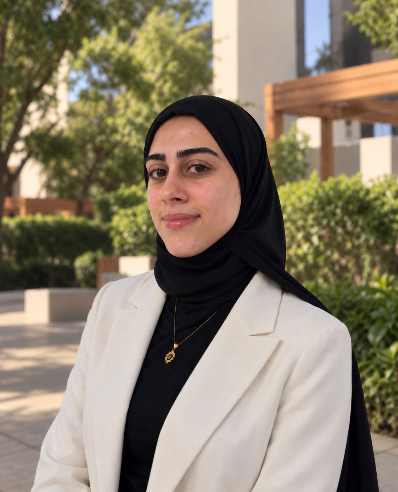

AI-based goods valuation pipeline
In progressPairs meta-learning with transformer architectures to predict import prices. Currently at 71% accuracy, in staging and under active development.

AI/ML Engineer & Researcher
Doha, Qatar
Noor is an ML/AI Engineer at Malomatia, Qatar, working on AI systems for customs and logistics under the direction of Khadeja Al-Mahmoud. In parallel, she has been a researcher at Qatar University since 2023, with the group of Prof. Amr Mohamed.
Her interest is in how learning systems can sustain performance during deployment under partially known conditions. Her work focuses on settings where user behavior changes in ways that aren't known in advance, with the goal of designing learning algorithms that adapt to these changes in real time. In practice, she builds AI models from offline data and adapts them to the unpredictable traffic of live systems.
وَمَا تَوْفِيقِي إِلَّا بِاللَّهِ ۚ عَلَيْهِ تَوَكَّلْتُ وَإِلَيْهِ أُنِيبُ
What I've built
Pairs meta-learning with transformer architectures to predict import prices. Currently at 71% accuracy, in staging and under active development.
An HS-code classification system on Azure with fine-tuned BERT-family transformers, live in production at 92% accuracy, an 80% efficiency gain over manual classification measured on real traffic.
A shipment route-optimization system that learns from offline data and adapts to live conditions to recommend efficient paths.
Online-learning and deep reinforcement-learning algorithms for UAV navigation in non-stationary and adversarial environments, with regret-based guarantees. Three first-author papers in KBS, ESWA, and ICC (below).
Peer-reviewed
Knowledge-Based Systems, Elsevier, vol. 334, p. 115147.
Got +99 comments in one revision cycle 😅
Expert Systems with Applications, Elsevier, vol. 267, p. 126136.
Survived 3 major revisions 😮💨
IEEE Int. Conf. on Communications (ICC), pp. 1298–1303.
Accepted safely 🎉
Background
Qatar University · Graduate Research Assistantship
Thesis on path planning for UAV missions under uncertainty, supervised by Prof. Amr Mohamed.
Qatar University
Capstone built the onboard architecture of QUbeSat I, the university's first CubeSat, led by Prof. Tamer Khattab.
Recent
![]()
IntelliLogistiX placed 3rd at the Malomatia AI Hackathon. Award
DRONE-RL published in Knowledge-Based Systems (Elsevier).
HSsify Engine went live in production and won 1st place at the Malomatia AI Contest. Award
Completed my MSc in Computing at Qatar University, recognized with the Research Distinguished Award. Award
Published in Expert Systems with Applications and presented at IEEE ICC, Montreal.
Acknowledgements
With thanks to my mentors.